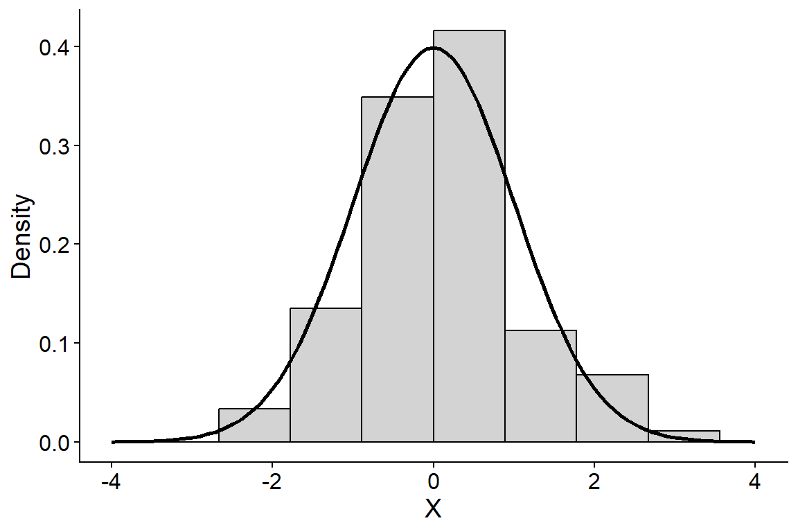
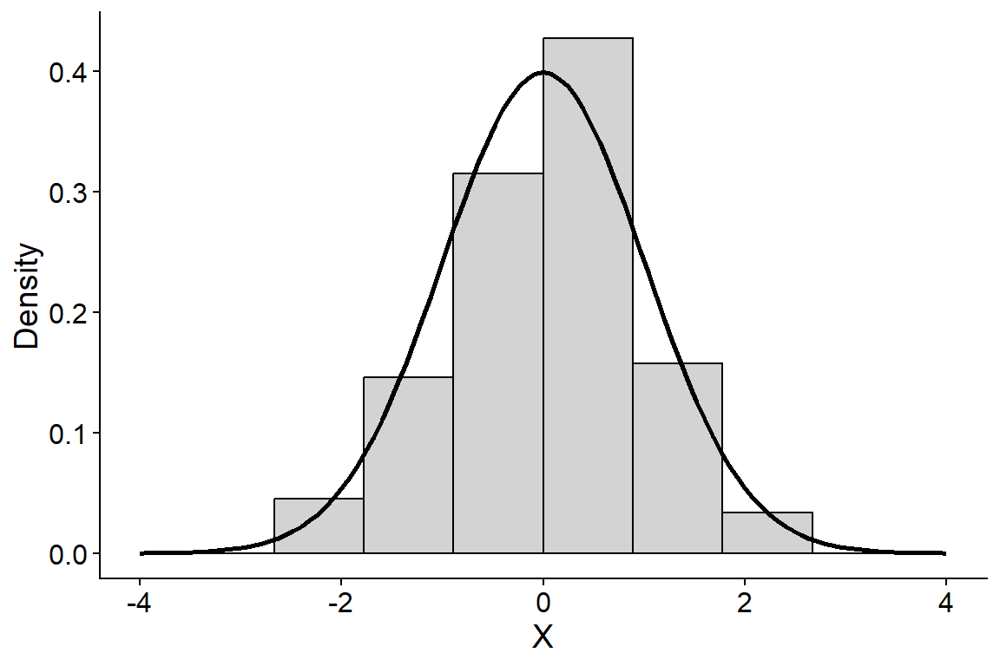
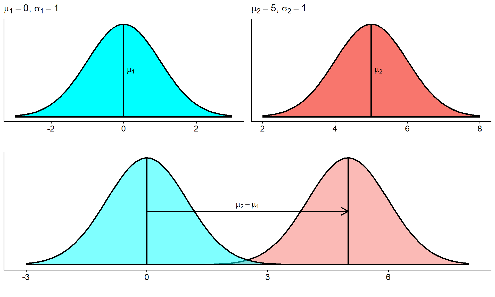
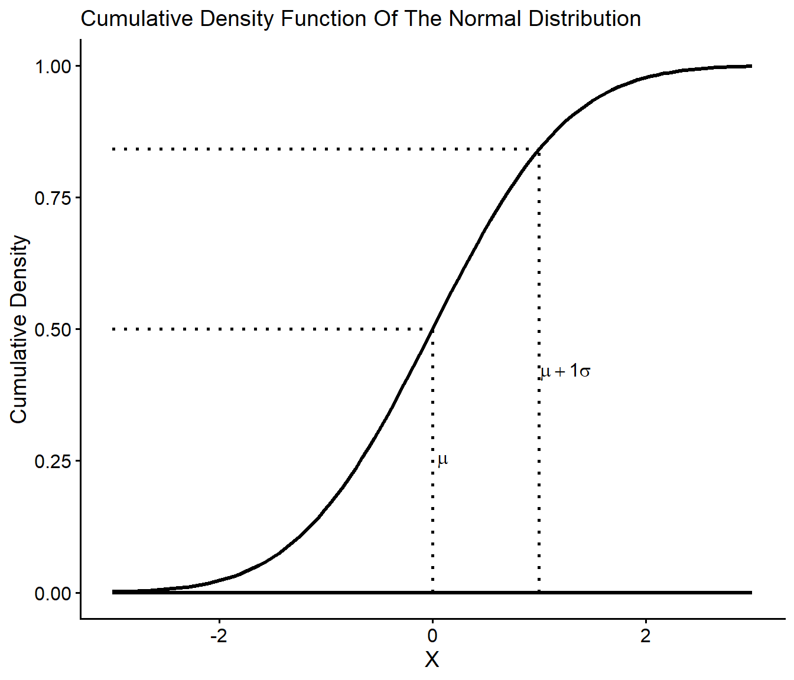
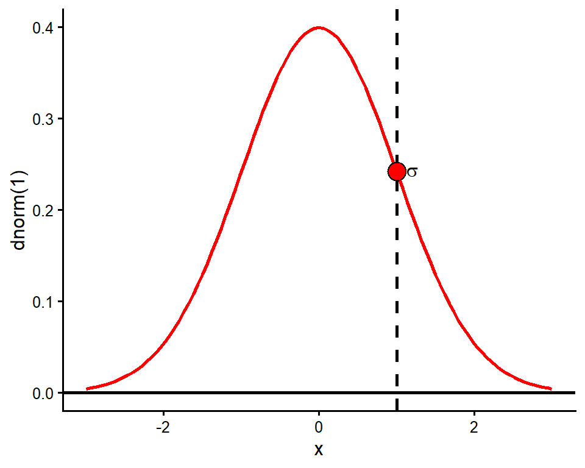
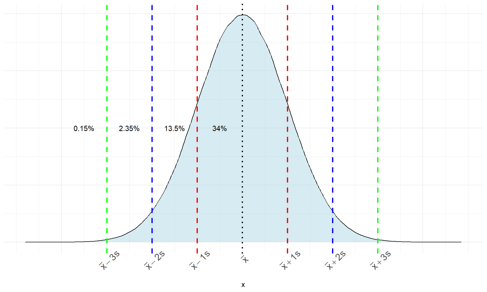
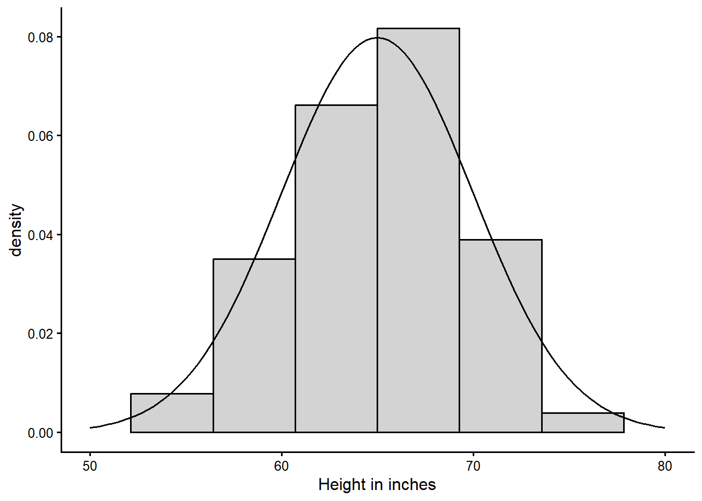
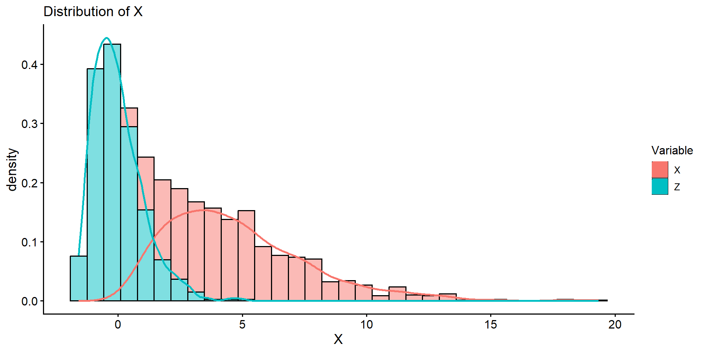
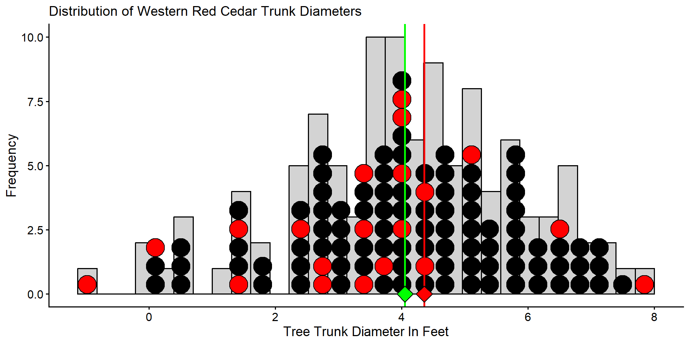
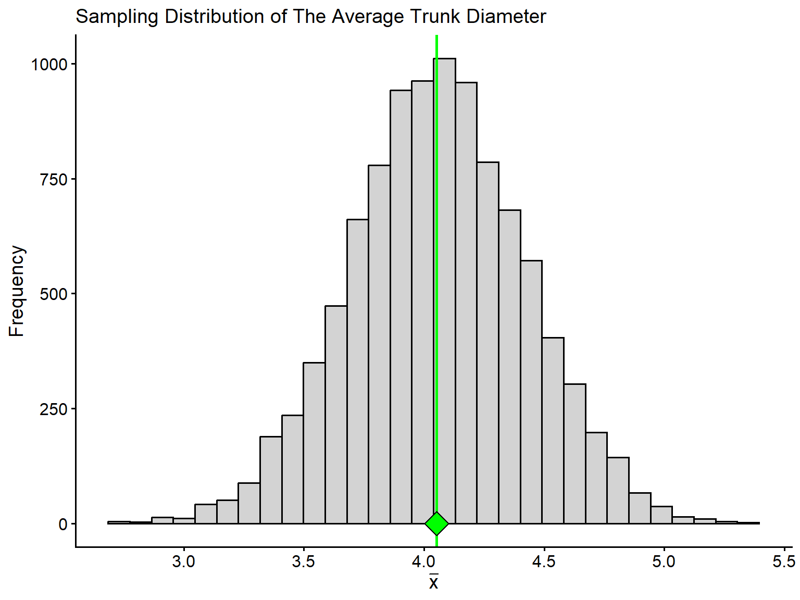

Week 5 Notes
STAT 251 Section 01
The normal distribution and \(z\)-scores
So far, “far from the center” has been measured in the units of whatever we happened to be measuring — points on an exam, grams of sugar, milligrams of sodium. That makes it impossible to compare across variables: is a student 12 points above the class mean further from typical than a cereal 90 mg above the sodium mean? The two numbers are not on the same scale, so the comparison is meaningless as stated.
The way out is to stop measuring distance in the original units and start measuring it in standard deviations. That single idea gives us \(z\)-scores, and it is what makes the normal distribution as useful as it is.
Measuring a deviation in standard deviations
Recall the twenty US breakfast cereals from the Week 3 notes. Below is a dot plot of their sodium content overlaid on a histogram of the same variable.

What is the largest positive deviation in this dataset? How does this deviation compare to the standard deviation of the entire dataset?
The largest deviation belongs to the cereal Raisin Bran which has a sodium content of 340 mg. Its deviation is \(340 - 167 = 173\). The standard deviation for the whole dataset is about 77mg, so this deviation is about \(173/77 \approx 2.25\) standard deviations above the mean. This indicates that Raisin Bran has a much higher sodium content than majority of the cereal brands in this dataset.
That last sentence is doing something new, and it is worth naming. We did not say Raisin Bran was 173 mg above the mean and leave it there — we divided that deviation by the standard deviation and reported the answer as “about 2.25 standard deviations above the mean”. Dividing a deviation by \(s\) strips the units off it, and what is left is a number that means the same thing no matter what was being measured. It is the quantity we will call a \(z\)-score:
\[z = \frac{x - \bar{x}}{s}\]
A cereal at \(z = 2.25\) and a student at \(z = 2.25\) are equally unusual within their own distributions, even though one is measured in milligrams and the other in exam points.
Density Curves
We have discussed previously that a histogram is a good tool for visualizing a distribution for most variables. Nevertheless, it is crucial to recognize that the bars in a histogram depict discrete frequencies corresponding to distinct values, or in the case of continuous variables, to discrete intervals. In contrast, the true nature of a continuous variable involves a distribution function that is inherently continuous. Consequently, this distribution is more accurately represented by a smooth curve rather than discrete bars. We call such a curve a density curve and the density component can be interpreted as a continuous measure of “how often” a value occurs. We will talk more about the nature of density later when we discuss probability. For now, it is useful to know that a density curve is how we represent the distribution of a continuous variable in theory. The plot below gives a visual example of the difference between a density curve and a histogram for a continuous random variable \(X\)

The normal distribution
The density curve in the plot above is called a normal curve and represents a family of distributions called normal distributions. All normal distributions have the same general shape - a symmetric bell-shape curve. The mean is located where the peak is tallest. It also forms an axis of symmetry where both the left and right portions of the distribution are mirror images.
The normal distribution has two parameters that govern its shape:
The mean \(\mu\) determines where the center of the distribution is located on the real number line.
The standard deviation \(\sigma\) governs its shape by how spread out the values are.
We typically use the short hand notation \(x_i \sim N(\mu, \sigma)\) to denote that an observation \(x_i\) is normally distributed with population mean \(\mu\) and population standard deviation \(\sigma\).
The diagram below shows how \(\sigma\) relates to the shape of a normal distribution

- A normal distribution with small \(\sigma\) will be tall and skinny with a sharp peak. A normal distribution with a large \(\sigma\) will be short with a broad rounded peak, like a hill.

From the plot above, we can see that two distributions with the same \(\sigma\) will have the same general shape, but if they have different \(\mu\) the location of the center will be different. Thus changing the value of the mean \(\mu\) will shift the position of the distribution on the real number line.
The cumulative density curve for a normal distribution forms a shape like the letter S called a sigmoid curve. See the plot below

The standard deviation \(\sigma\) and the mean \(\mu\) completely determine the shape of a normal distribution. As a result, the standard deviation is a natural measure of spread for normal-shaped distributions and we can approximate its value by eye. Take for example the density curve for a normal distribution with parameters \(\mu = 0\) and \(\sigma = 1\).

One standard deviation from the mean will always be the point on the curve where the slope transitions from increasingly steep to increasingly gradual. The red dot is plotted above the point at one standard deviation from the mean and indicates the position of this slope transition.
The density curve of a normal distribution at any point \(x\) is given by the function
\[ f(x) = \frac{1}{\sigma\sqrt{2\pi}}e^{\frac{-1}{2}\left(\frac{x-\mu}{\sigma}\right)^2} \]
We will not make direct use of this function in this class; however, this function represents a key point in the mathematical work in probability and statistics regarding variables that exhibit normality.
Why is the normal distribution important?
Many real variables have normal distributions. For example, most physical characteristics such as height, weight, length will have this distribution.
Normal distributions are often good approximations to many kinds of chance outcomes such as counting the number of heads in many tosses of a fair coin (more on this later).
Lastly, and most importantly, many statistical inference procedures that are based on normal distributions will still give good results for other roughly symmetric distributions.
The Empirical Rule
Although there are many different normal curves, they all have common properties. One of the most important is called the empirical rule (also called the 68-95-99.7 rule). The empirical rule states that for any approximately normal-shaped distribution with mean \(\mu\) and standard deviation \(\sigma\):
approximately \(68\%\) of the observations will have a value within 1 standard deviation of the mean
approximately \(95\%\) of the observations will have a value within 2 standard deviations of the mean
approximately \(99.7\%\) of the observations will have a value within 3 standard deviations of the mean

- The plot below gives the empirical rule visualized on the cumulative density

Consider the distribution of the height of female college athletes from a survey of college students in the state of Georgia.

Approximately, what proportion of the students will have a height between 60 and 70 inches?
- 60 and 70 inches are exactly 1 standard deviation (\(\sigma = 5\)) below and above the mean (\(\mu = 65\)), so by the empirical rule approximately \(68\%\) of students fall in this range.
Approximately, what proportion of the students will have a height \(\geq 70\) inches?
- 70 inches is 1 standard deviation above the mean. About \(68\%\) fall within \(\pm 1\sigma\), leaving \(32\%\) in the two tails, so approximately \(16\%\) are at or above 70 inches.
Approximately, what proportion of the students will have a height between 55 and 75 inches?
- 55 and 75 inches are 2 standard deviations below and above the mean, so by the empirical rule approximately \(95\%\) of students fall in this range.
Standardizing Observations: The Z-score
From the empirical rule, we know that nearly all of the observations in a bell-shaped distribution will have a value within \(\pm 3\sigma\) of the mean. Therefore, we can use the property of the empirical rule of normal distributions to come up with a criterion for defining outliers that is specific to these types of distributions.
We can define an outlier as an observation whose value is more than \(3\sigma\) greater than the mean or \(3\sigma\) less than the mean.
More commonly, outliers are defined as an observation whose value is more than \(\pm 2\sigma\) from the mean
How can we easily tell how far an observation is from the mean?
First, it is important to note that the value of \(\sigma\) or \(s\) is affected by the units of the variable. For example, in the distribution of college student heights above, height is recorded in inches and the standard deviation of college student height was about \(s = 5\). However, if we have the same dataset and height was recorded in millimeters then the standard deviation would be much larger at \(s = 127\) because the units have a smaller increment. This makes comparing normal distributions, or determining outliers dependent on the scale of the underlying variable.
To get around this, we can use something called a z-score. A z-score is a standardization of an observation from a normal distribution that can be directly interpreted as the number of standard deviations the observation falls from the mean. Mathematically a z-score is defined as
\[ z_i = \frac{\text{observation} -\text{mean}}{\text{standard deviation}} = \frac{x_i - \bar{x}}{s} \]
by subtracting off the mean and dividing by the standard deviation, we are performing a linear transformation to convert \(x\) into a new unit scale. If the original distribution of \(X\) is normal \(x_i \sim N(\mu, \sigma)\), then computing the z-score represents a rescaling of \(X\) such that
\[z_i = \frac{x_i - \bar{x}}{s} \sim N(0, 1)\]
The distribution of \(z_i\) is a special case of the normal distribution called the standard normal distribution. The standard normal distribution has a mean of zero and a standard deviation of one and we often define this in symbols as \(z_i \sim N(0,1)\)
Lets consider the following example using data collected on the air pollution of countries in the European Union:
| Country | Abbreviation | CO2 Emissions Per Capita (metric tons) |
|---|---|---|
| Austria | AUT | 8.0 |
| Belgium | BEL | 10.0 |
| Bulgaria | BGR | 6.0 |
| Croatia | HRV | 4.7 |
| Cyprus | CYP | 7.0 |
| Czech Republic | CZE | 10.7 |
| Denmark | DNK | 8.3 |
| Estonia | EST | 13.7 |
| Finland | FIN | 11.5 |
| France | FRA | 5.6 |
| Germany | DEU | 9.1 |
| Greece | GRC | 7.7 |
| Hungary | HUN | 5.1 |
| Ireland | IRL | 8.8 |
| Italy | ITA | 6.7 |
| Latvia | LVA | 3.6 |
| Lithuania | LTU | 4.4 |
| Luxembourg | LUX | 21.4 |
| Malta | MLT | 6.2 |
| Netherlands | NLD | 11.0 |
| Poland | POL | 8.3 |
| Portugal | PRT | 5.0 |
| Romania | ROM | 3.9 |
| Slovak Republic | SVK | 6.7 |
| Slovenia | SVN | 7.5 |
| Spain | ESP | 5.8 |
| Sweden | SWE | 5.6 |
| United Kingdom | GBR | 7.9 |
The mean of CO2 emissions is \(\bar{x} \approx 7.9\) with a standard deviation of \(s \approx 3.6\). Compute the \(z-score\) for the CO2 air pollution of the country Luxembourg. Is Luxembourg an outlier? If so, what does this mean in terms of its CO2 pollution?
The z-score for Luxembourg is computed as \[z = \frac{21.4 - 7.9}{3.6} = 3.75\]
This indicates that the CO2 emissions for the country Luxembourg is 3.75 standard deviations above the mean CO2 emissions in the EU. Using the \(\pm 2s\) rule for determining outliers, we would conclude that the emissions for Luxembourg are an outlier relative to the emissions for the rest of the European Union. Thus by computing a z-score we can quickly discover how extreme an observation is relative to its distribution.
A note about linear transformations :
- A linear or affine transformation of a variable DOES NOT change the shape of its underlying distribution. Thus, converting \(x_i\) to \(z_i\) does not “convert” the distribution of \(X\) into a normal distribution, but instead, rescales the values \(x_i\) to have zero center and unit variance. If \(x_i\) comes from a highly skewed distribution the transformed z-scores will also have a skewed distribution. See plot below:

Sampling Distributions
Consider a small study to estimate the average trunk diameter (in feet) of Western Red Cedars at the Idler’s Rest nature preserve just outside of Moscow. The population distribution is given by the histogram and dot plot below. The population consists of \(N = 109\) trees and the mean diameter is \(\mu = 4.05\) with standard deviation \(\sigma = 1.81\). The green diamond below denotes the value of the population mean diameter for trees at the Idler’s Rest nature preserve.

Assume that we want to estimate the population mean trunk diameter using a sample of \(20\) trees selected at random from the nature preserve.

The 20 red dots in the plot above represent the trees we selected to measure the diameter. From this sample of 20 trees, we estimate the mean diameter to be \(\bar{x}_1 = 4.36\) feet. Now imagine we repeat this process and gather a new sample of \(20\) trees selected randomly from the population.

The blue dots in the plot above constitute the trees selected for measurement in the second sample. This time the sample mean is computed as \(\bar{x}_2 = 2.99\) feet. Clearly, our estimate of \(\mu\) is dependent on the sample we select. Now imagine that we repeat this process many times - selecting a sample of 20 trees, measuring their diameters and computing the sample mean. It’s easy to imagine that we would produce a distribution of estimates of \(\mu\). Such a distribution is called a sampling distribution and represents the distribution of a statistic. The sampling distribution of for mean diameter from \(10,000\) samples of \(n=20\) trees is given below.

The variation in the sampling distribution of the mean shown above is because of the differences between the samples. Again, the green dot represents the population mean (\(\mu\)). From the plot, you can observe that the sampling distribution of \(\bar{x}\) is centered at the true value of the population parameter.
The margin of error of an estimate is how far we expect an estimate to fall from the true value of a population parameter. It defines a set of boundaries that allows us to quantify how much an estimate is expected to vary between samples. Formally, it is the largest distance between the true population parameter and an estimate that is not an outlier. Because the margin of error describes the variability of the estimate \(\hat{\theta}\) across samples, it is built from the standard error (\(SE\)) of the estimate - the standard deviation of its sampling distribution - not the standard deviation \(\sigma\) of individual observations. Thus if we use the \(\pm 2\cdot SE\) rule to define outliers, the margin of error of our estimate is the interval \(\hat{\theta} - 2\cdot SE < \theta < \hat{\theta} + 2\cdot SE\).
In statistics, we often hear the words significant and not significant when a particular statistical result is discussed. A statistically significant result is one that is decidedly not due to ordinary variation - this means a result that is unlikely to have arisen from chance or coincidence alone. By convention, we consider a result statistically significant when it is too large to be explained by ordinary sampling variation.